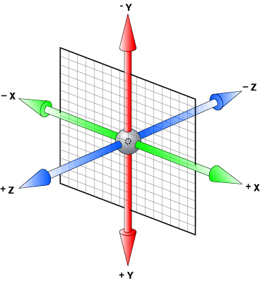

CSS3~~3D 转换: rotateX( ) & rotateY( );
(1) transform: rotateX( );
围绕其 X 轴以给定的度数进行旋转(2) transform: rotateY( );
围绕其 Y 轴以给定的度数进行旋转3D转换如下：
坐标系

(1) div:hover{ transform:rotateY(-45deg); }

(2) div:hover{ transform:rotateX(60deg); }
ps div:hover{ transform:rotate(90deg); }
QQ与YY